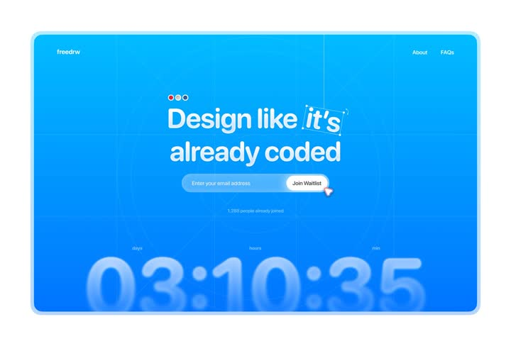

Waitlist screen: saturated blue canvas ('freedrw') with the headline 'Design like it's already coded' where the word 'it's' sits in an italic serif inside a live selection box with a text cursor - as if someone just selected it in a design tool; email input + white 'Join Waitlist' pill, '1,288 people already joined' microcopy, and a giant blurred countdown (03:10:35) anchored to the bottom edge.
Media
Frame-by-frame

0-100%
Mostly static comp: blue #1683F8 field, top-left logo, top-right About/FAQs; headline 64px white with 'it's' in italic serif + dashed selection rect + caret; pill input with inset button; huge countdown numerals (days/hours/min labels) half-cropped at the bottom, rendered blurred (depth-of-field). The caret blinks; countdown ticks.
Build prompt
Rebuild this interaction 1:1: a waitlist screen - saturated blue canvas ("freedrw") with the headline "Design like it's already coded" where "it's" sits in italic serif inside a live selection box with a blinking text cursor, as if just selected in a design tool; email input + white "Join Waitlist" pill; "1,288 people already joined" microcopy; a giant blurred countdown (03:10:35) anchored half-cropped at the bottom edge.
## Integration
Integration: stack-agnostic spec - springs given as stiffness/damping, timed motions as duration + curve, canvas/shader notes are perf guidance only; map every value to your framework and animation library of choice.
## Scene
Blue #1683F8 field; top-left logo, top-right About/FAQs. Headline 64px white sans with "it's" in italic serif, wrapped in a dashed selection rect with a caret. Pill email input with an inset white "Join Waitlist" button. Bottom: huge countdown numerals with days/hours/min labels, half-cropped at the screen's bottom edge, rendered blurred (depth-of-field).
## Motion spec
Pattern: two living details on a static comp.
- Caret: blinks at 1s cadence, steps() (hard on/off).
- Countdown: ticks each second (tabular-nums).
- Everything else static - the selection box styling is a fixed design element, not an animation.
## Calibration
- Caret blink hard steps, 1s - a soft fade reads as a glow, not a cursor.
- The countdown's blur and bottom-crop are compositional: it sits behind/under the content layer, huge and out of focus.
- The italic serif on "it's" is the typographic joke - it must be a visibly different voice.
## Reduced motion
Caret holds visible; countdown still ticks (it is information).
## Don't miss
- The selection box (dashed rect + caret) is what makes the headline feel caught mid-edit in a design tool - plain text loses the concept.
- Countdown numerals are enormous and cropped - sized like a background, not a widget.
- "1,288 people already joined" is small and quiet - social proof as a footnote.
Mechanics
trigger
autoplay (caret blink, countdown tick)
elements
headline with selection-styled word, email capture, giant blurred countdown